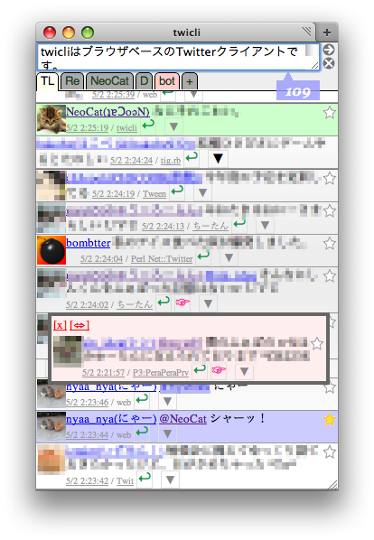
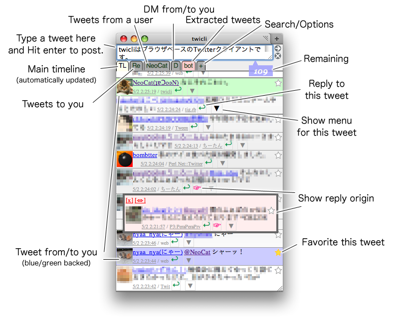

twicli
|
twicli is a browser-based Twitter client.
Useful when you are in an Internet cafe, doing something else while viewing Twitter timeline. |  |
Usage
Launch
Just click the link above, or run it as a bookmarklet.When you get asked for authorization, please follow the instruction on each page.
Be careful not to hit API request limit (350 requests per hour) by clicking too much. :-P
How to Use
|  |
FAQ
- A "json" file is downloaded on tweets, RT, etc.
=> This can be avoided by turning on the "Tweet via GAE server" option in the settings on the "+" tab and clicking the "Save" button.
- How to send direct messages?
=> Please write "d username message contents" in the tweet field and send it. You can write "d username" more easily by clicking reply button in D tab. You must be followed by the destination user to send direct messages.
- How to hide tweet which contains specified kerwords?
=> Write "-::keyword:1" into "Pickup Pattern" in the "+" tab.
- My tweets are sometimes lost ...
=> Twitter may be too crowded. Try writing just "r" and hit enter to re-post your previous tweet.
- Appearance is poor ...
=> Default appearance isn't decorated at all to display many tweets at once. You can customize twicli's appearance using CSS. Please refer "Customize" section below.
- You can find more information in twicli wiki.
Customize
There are also some information about customizing twicli in twicli wiki.User Stylesheet
You can add your own CSS in "user stylesheet" section of the "+" tab. For example;- to apply corner-rounded and shadowed appearance : @import url(styles/round.css);
- to hide user icons : .uicon { display: none; }
- wider lines : .status { line-height: 1.5; }
Plugins
You can register plugins by setting them at the "Preferences" in the "+" tab.Currently, there are plugins below:
- Additional plugins
- autocomplete.js: Auto-complete user names and hashtags from TL when "@" or "#" is entered. (created by @oui_)
- reply_favicon.js: Change favicon(not supported by IE and Safari) and the title when 'Re' is updated. (created by @edvakf)
- sound.js: Play sound when 'TL'/'Re' is updated.
- insert_hashtag.js: Append the hashtag to your tweets automatically while a tab for the hashtag is opened. (created by @_wa_)
- stream_search.js: Update keyword/hashtag search results on real-time using streaming API.
- find_rt.js: Find out which tweet is targetted by '>RT'.
- tweets_around_tw.js: Find tweets around the specified tweet. (created by @h0k0r0bi)
- notify_desktop.js: Notify various events using desktop notification. (created by @oui_)
- Default plugins
- regexp.js : Add a tab that extracts timeline that has specific keywords, ID, etc. Detail(in Japanese)
- lists.js : Add a tab that shows lists you following. Specify the name of lists to make tab in "+" tab.
- search.js : Add keyword search by Twitter Search to the "+" tab.
- followers.js : Colorize tweets of users that you don't follow in blue. To use this, you need to fetch the list of followers by clicking the "Renew" button at the "Color followers" section.
- translate.js : Choose "translate" from ▼, then the tweet is translated into the language specified in "+" tab > Translate. (Specify "en" for English.)
- thumbnail.js : Add thumbnails to the URL of some photo sharing services. Currently supports twitpic, movapic, HatenaFotolife, Tumblr, yFrog, Plixi, img.ly, Ow.ly, Flickr, Instagram, picplz, Mobypicture, via.me, YouTube, Nico Nico Douga, and SlideShare.
- embedsrc.js: Add a button () to overlay the content of URL in tweets. (created by @_wa_)
- resolve_url.js : Replace short URLs with the originals in the timeline. (created by @edvakf)
- shorten_url.js : Typing a URL in the text area followed by three semicolons (;;;) makes a shortened URL. (created by @edvakf)
- geomap.js : Display inline Google Map by clicking the marker () of tweets with GeoLocation.
- tweet_url_reply.js: Add a button () to get the content to URL of a tweet. (created by @edvakf)
- mute.js: Add a menu to mute (hide) tweets with specified user or hashtag temporarily (1 hour) in ▼.
- shortcutkey.js: Enable operation by shortcut keys. (->List of the shortcut keys)
- multi_account.js: Switch between multiple accounts in '+' tab. Useful with tabbed browsers.
- notify.js: Display notification from @twicli on startup.
- tweets_after_rt.js: Find tweets done after retweets of the specified tweet.
Source
"twicli" is developed at github under MIT license.Please report any bugs/wishes to @NeoCat. Your patches are also appreciated.
Links (all in Japanese)
- twicli wiki
- Development Memo
- About API call from JavaScript
- About development of Plugins
- About Outputz plugin
- About Regexp plugin(1)
- About Regexp plugin(2)
- About Regexp plugin(3)
- About Sound plugin
- About Lists plugin
- About Geomap plugin
- About Twitter API 1.1 support
- About Stream plugin